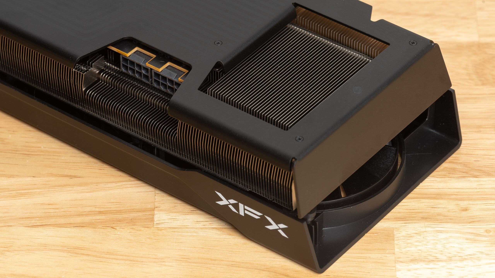

Начиналось всё скромно: энтузиаст Дэниэль Бланко (danielblnc) хотел лишь научить карты Radeon тянуть нейрорендеринг DLSS 5, аналога которому у AMD нет вовсе. В свежем релизе 0.8.0 проекта DLSS-NR-on-AMD он добавил всё остальное: реконструкцию лучей (Ray Reconstruction), суперразрешение DLSS 4.5 и генерацию кадров, включая мультигенерацию до 4X. То есть на Radeon теперь собирается практически полный современный стек DLSS — в качестве стабильной базы при этом используется FSR 4.1.1, чтобы не зависеть от разных реализаций апскейла в отдельных играх.
По словам самого автора, качество картинки получилось очень близким к нативному DLSS на картах Nvidia — за исключением «некоторых эффектов, которые могут работать не на сто процентов». В его собственных тестах RX 9070 XT выдаёт 90–100 кадров в секунду в 1080p, и он планирует ежедневно улучшать порт до уровня производительности RTX 5070 Ti. Реальные отзывы с Reddit скромнее: кто-то не теряет во внутреннем FSR вообще, у кого-то просадка доходит до 25%. Порт работает без античита — с играми online-защиты его использовать не получится.
Каждая технология DLSS — это закрытые нейросетевые модели Nvidia, и то, что они оказались запускаемы на чужом железе, говорит скорее о созревании самой модинг-сцены, чем о слабости защиты. Официального анонса Nvidia по этому поводу, разумеется, нет: для компании это неудобное напоминание, что её главное программное преимущество держится на маркетинге «только для RTX», а не на непреодолимой технике. У AMD есть собственные аналоги (FSR 4, генерация кадров), но поддерживают их в играх заметно реже — модинг-сообщество фактически заполняет этот разрыв само.